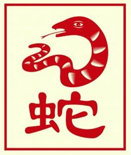

The Chinese Zodiac: Snake

- Fixed Season: Summer
- Fixed Direction: South-Southeast
- Fixed Element: Fire/Yin
- Associated Sun Sign: Taurus
Those born under the sign of the Snake place a lot of value on their own experiences. They learn from their own mistakes, and they are quite adept at identifying the motivations of others. Because of this, Snakes are people who are rarely ever deceived or taken advantage of without their knowledge. Sometimes they come off as a but suspicious, but usually they don't make a point of expressing their distrust. Rather, they simply choose to live their life according to their own plan and their own standards, enduring whatever comes their way with a stoic determination.
One of the toughest things for someone born a Snake to deal with is the time they are forced to be alone. Communities help them to feel complete, but as more people begin to surround them it becomes harder to monitor the situation and protect their own interests. As such, Snakes will often come and go in relationships, needing some time on their own in order to recoup their energy and refocus their thoughts. When allowed such time without judgment, however, Snakes prove to be interesting friends; easily passing a night away in pleasant conversation with whoever is willing to sit down and join them.